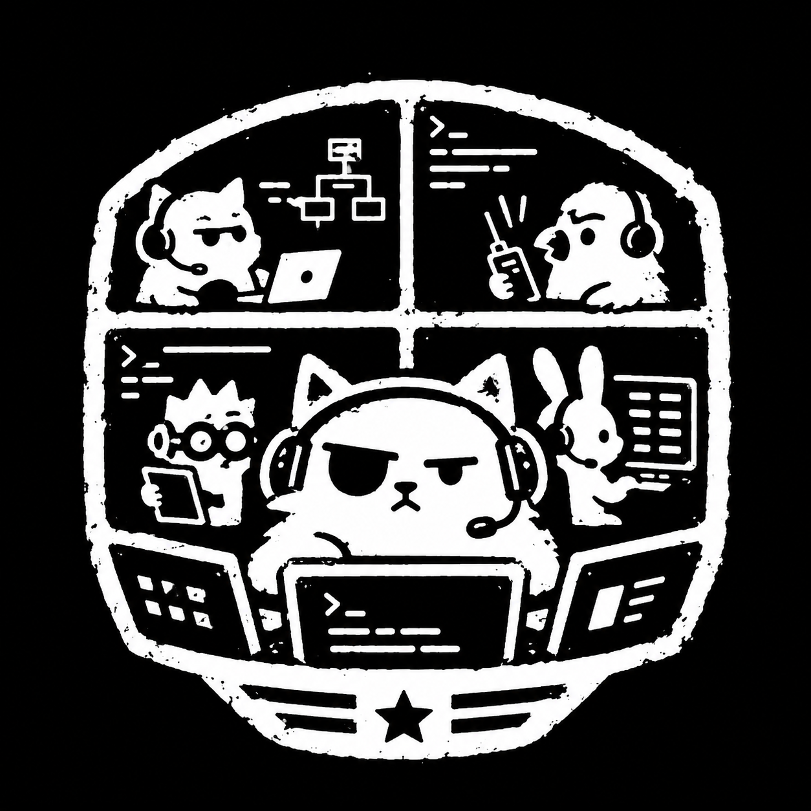
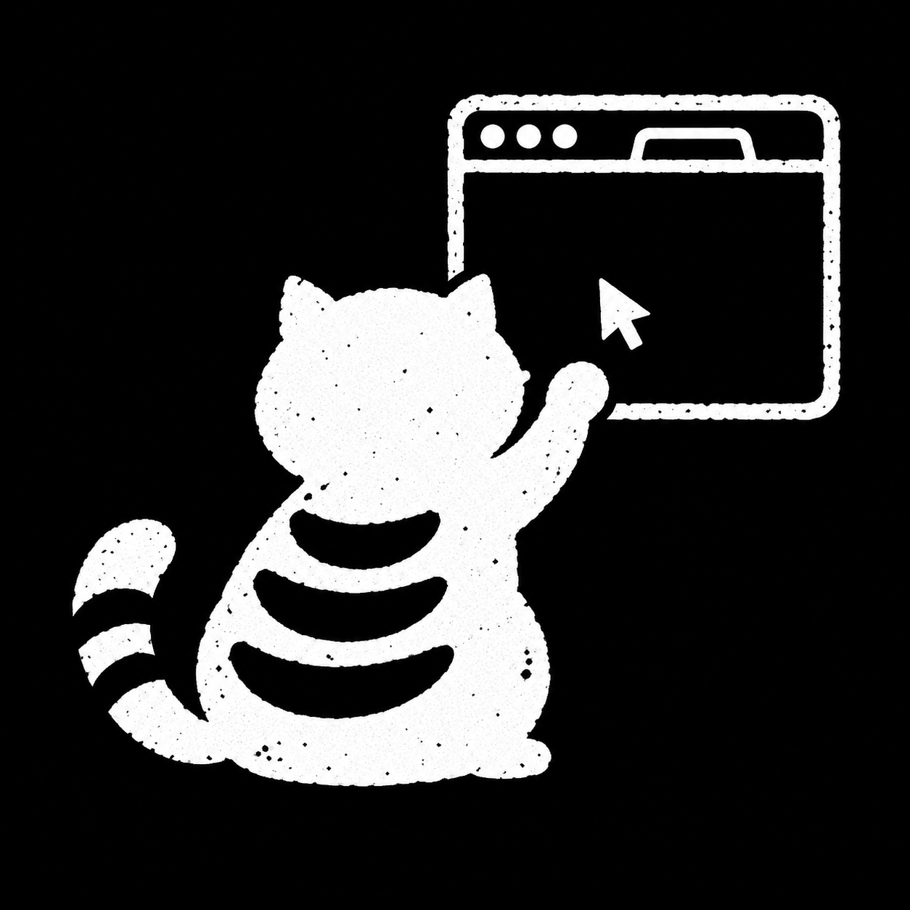

gang
Put agents to work together without losing sight of them.
Visible tmux agents, cross-agent messaging, and a mission-control interface for Pi.
pi install git:github.com/Jeecabs/gangExtensions, packages, and skills I built for the Pi coding agent.

Put agents to work together without losing sight of them.
Visible tmux agents, cross-agent messaging, and a mission-control interface for Pi.
pi install git:github.com/Jeecabs/gang
I want a reviewer on every turn, not only the ones I remember to check.
Independent models read each finished turn with read-only tools and speak up only with a concrete nit, concern, or blocker.
pi install git:github.com/Jeecabs/micro-managerA long test run should not hold the whole session hostage.
Replaces Pi's Bash tool for finite jobs. Quick commands return normally. Slow ones yield after 30 seconds, stay supervised, and report back when they exit.
pi install git:github.com/Jeecabs/no-block
An agent that builds frontends should be able to look at them.
Browser-control tools powered by agent-browser. Connect Arc or Chromium over remote debugging and let Pi navigate, click, and inspect the page.
pi install git:github.com/Jeecabs/da-browserThe rest of the public toolbox, grouped by what it helps with.